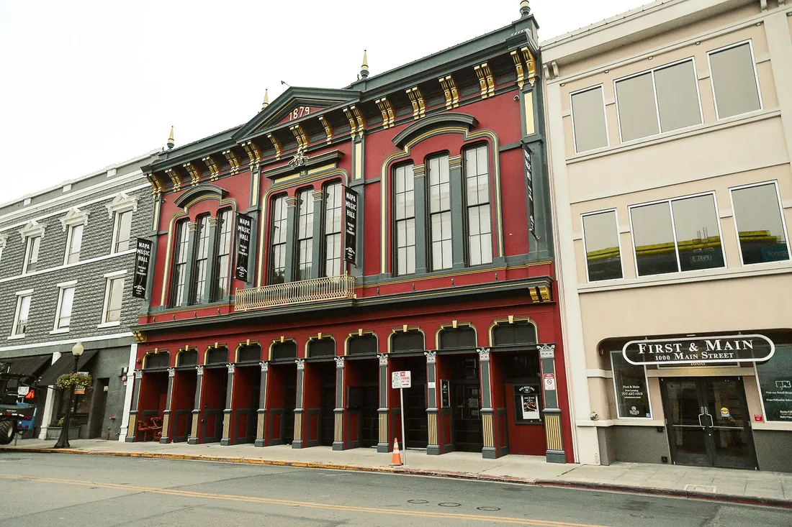
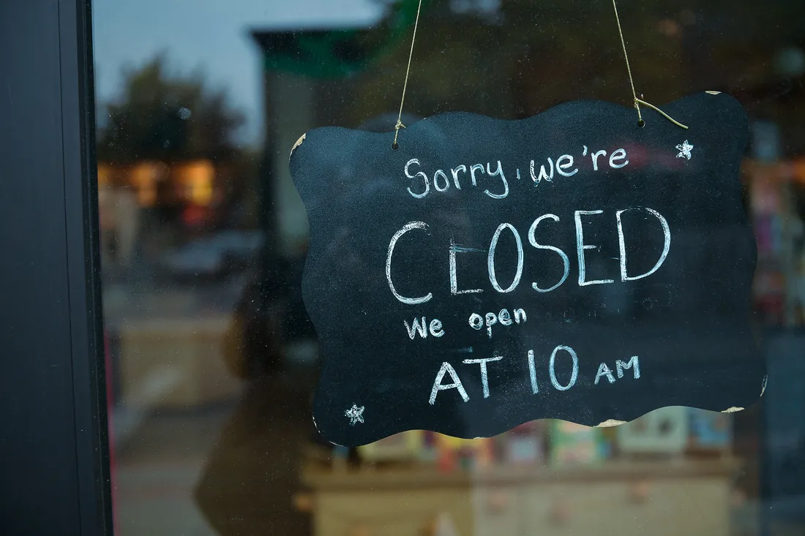
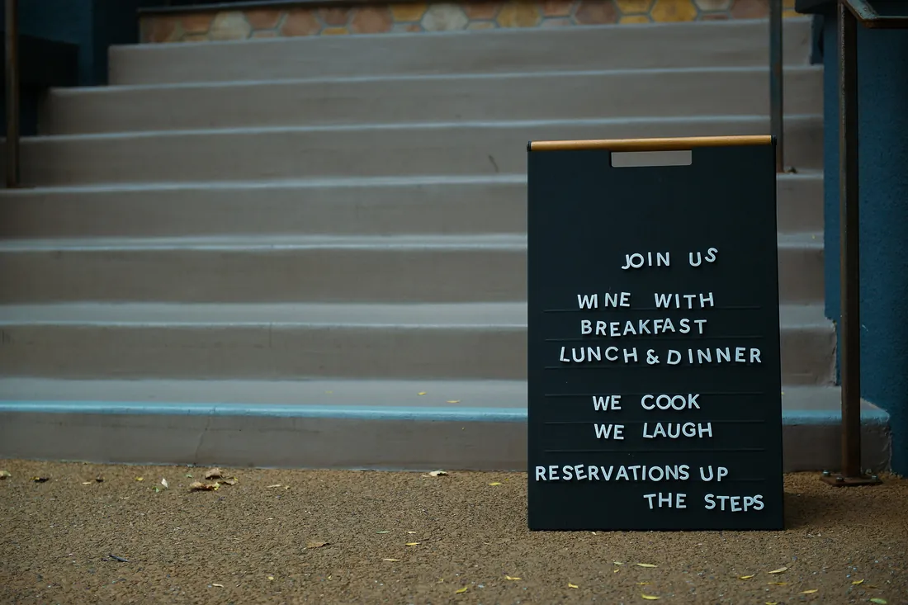
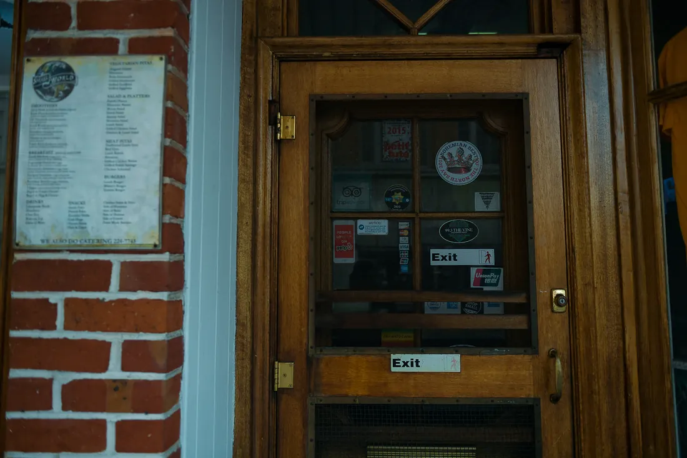
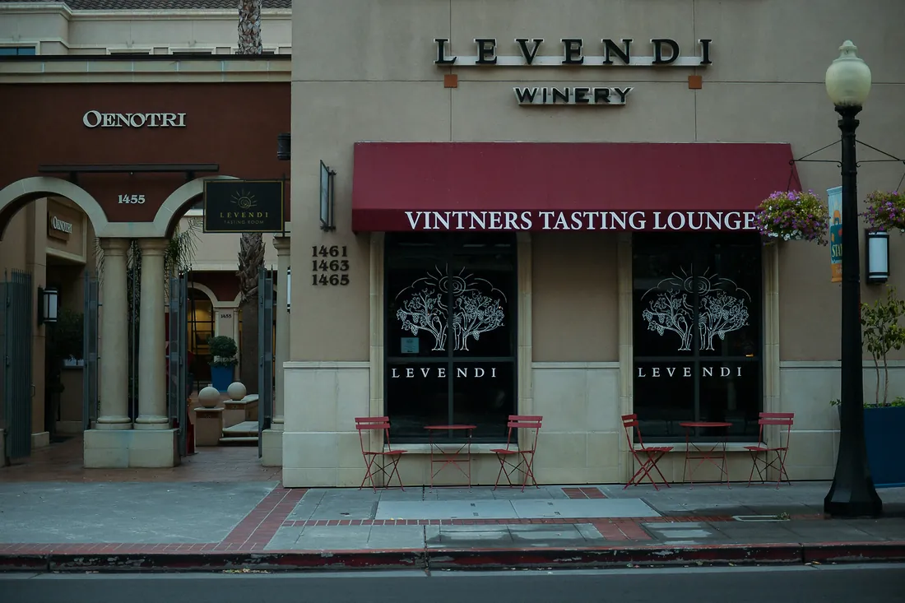
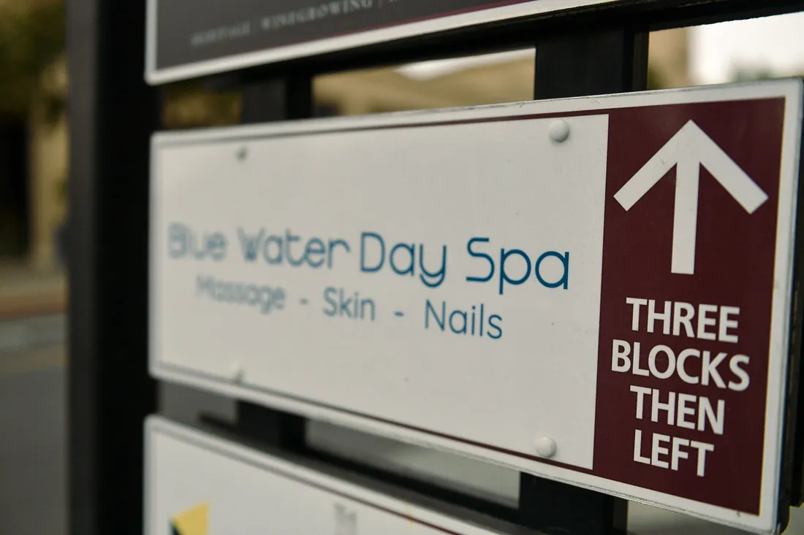
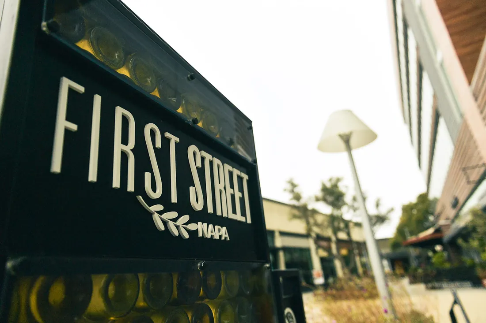
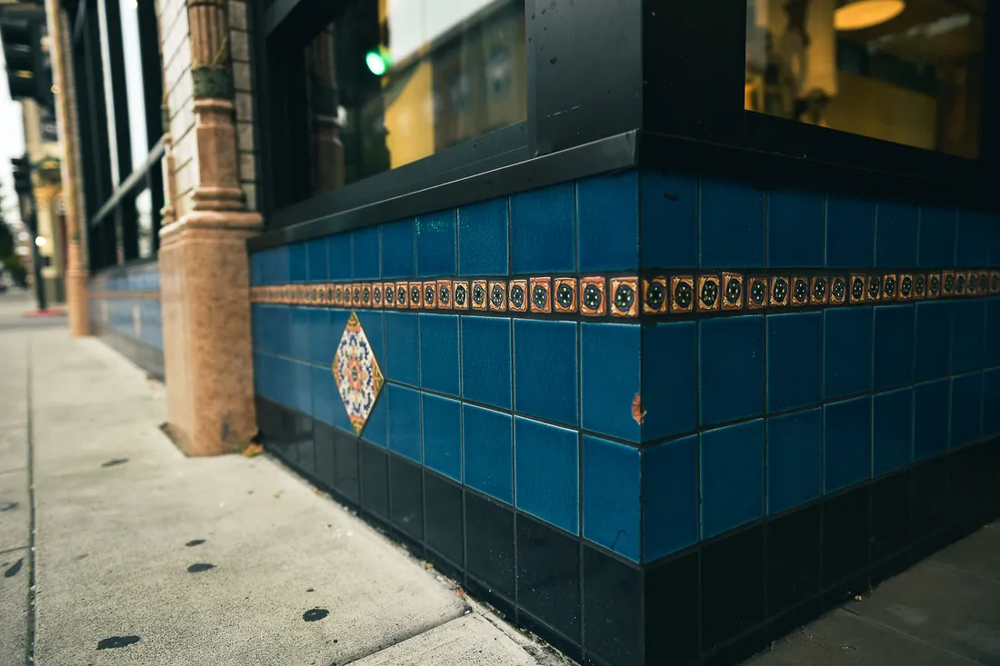

Napa already knows how to get attention on the street.
The question is what happens before someone gets here.

Napa businesses are remarkably good at communicating in person. Hours written in chalk. Menus in windows. Offers on letterboards. Arrows pointing around corners.
Walk through downtown and much of the business explains itself.
But many decisions about Napa happen somewhere else.
In a hotel room. Over breakfast. On the drive into town. While planning a weekend. Or in a question asked to Google, Maps or ChatGPT.
- Where should we eat tonight?
- Which tasting rooms take walk-ins?
- What’s open Sunday?
- What can we walk to from First Street?
At that point, the sidewalk cannot help.
The decision depends on the version of the business that exists online.
Two ways to read this page
Visiting Napa
Find places, experiences and local businesses more easily before you arrive.
Doing business in Napa
See how visitors may be discovering businesses like yours — and where useful information can get lost along the way.
Most people don’t begin with a business name. They begin with a question.
Someone looking for dinner may not know which restaurant they want. Someone looking for a tasting room may only know they want somewhere nearby that takes walk-ins.
The answer may come from Google, Maps, reviews, a hotel recommendation, social media or an AI assistant. Different doors, same requirement: the business has to give enough accurate information to be found, understood and chosen.
First Street, Napa ·
A visitor may want somewhere to eat around seven, a tasting room that takes walk-ins, a spa open Sunday, coffee near First Street, or something worth visiting within walking distance.
Hours. Location. Services. Menus. Photographs. Reviews. Reservations. Directions.
When those are clear, choosing becomes easier. When they are missing, outdated or contradictory, the business usually receives no warning — nobody calls a restaurant to say they almost booked a table.
The visitor simply keeps looking.
That is digital friction.
What works on the sidewalk doesn’t always make it online.
We walked First Street looking at businesses the way a visitor might. Not as marketers. As people trying to figure things out.
What does this place do? Is it open? Where is the entrance? Can we walk in? Do we need a reservation? Is there something upstairs? Which way do we turn?
Napa businesses answer these questions constantly in the physical world. A chalkboard gives the hours. A letterboard explains the offer. A doorway carries years of earned credibility. A directional sign makes sure someone doesn’t miss a business a few blocks away.



None of this is outdated marketing.
It works because the information appears exactly when someone needs it. The limitation is reach: it mostly helps the person who has already arrived.
A traveler planning tomorrow from a hotel room doesn’t have the chalkboard in front of them. Someone deciding where to go before driving downtown cannot see the letterboard. An AI assistant answering a question about Napa cannot rely on a sign that exists only on the pavement.
They depend on what the business has already made available elsewhere.
The goal is not to replace what works on the street. Keep the chalkboard. Keep the hand-painted window. Keep the letterboard and the little arrow around the corner.
Carry the same clarity beyond the pavement. The hours. The offer. The location. The services. The booking path. The photographs. The answers to the questions people ask before deciding where to go.
The real business already exists. Its digital version should represent it accurately enough to be found, and usefully enough to help someone choose it.


AI is becoming another front door.
45% of 1,002 U.S. consumers surveyed said they had used AI tools to find local-business information in the previous 12 months, against 6% the year before.
People still use Google. They still use Maps, review sites, recommendations and social media. Now they also ask AI assistants.
Where should we have dinner near downtown Napa? Which tasting rooms are good for walk-ins? Is there a spa open Sunday? What can we do within walking distance?
The difference is that an AI system may try to answer the question directly instead of returning a page of links.
That raises the standard for local information. It is no longer enough to exist online. The business has to be understandable online. Its name, address, hours, services, photographs and booking information need to be clear enough for a person to use and consistent enough for search and AI systems to understand.
A Napa business does not need to become an AI company. The truth about the business simply needs to travel well.

You may already be doing the hard part.
That gap is digital friction. Some of it may already exist in your business without being obvious to you, and there is a simple reason: you already know the answers. You know your hours, your services, how to book, where to go and who to call. Your customer does not. They have to go looking for those answers, and every place they struggle to find one creates friction.
Can they find you?
You knowThe building, and the cross street everyone uses They findAn inconsistent address
You knowEvery service you offer, including the one you are best at They findA service that is difficult to find
Can they understand you?
You knowThe question you are asked every week They findA question nobody answers online
You knowWhere the important information is They findA polished website that hides basic information
Can they trust what they find?
You knowWhen you are actually open They findWrong hours
You knowWhat the place looks like now They findOld photographs
Can they take the next step?
You knowThat you would have called them back They findAn unanswered call
You knowHow to book someone in They findA confusing booking path
You know what you sell. Your regular customers know why they come back. Your staff already knows the questions people ask every day. The friction appears between that real business and the version a new customer encounters online.
Sometimes the information exists, but not in a form that travels well. A price may exist only inside an image. An important service may never have its own clear explanation. The website may use clever marketing language where a direct answer would be more useful. Different platforms may describe the same business differently.
This matters increasingly as search engines and AI systems try to answer questions rather than simply return links. The industry has names for parts of this — SEO, answer engine optimization, generative engine optimization, citation readiness. The labels matter less than the outcome.
And can a search or AI system understand enough to include you when somebody asks? That is the same four questions, asked by something that will not phone you to check.
Every unnecessary uncertainty gives someone another reason to keep searching.
We find the friction. We remove it.
Not every business needs all five. That’s part of the point. The first job is figuring out where the friction actually is — and then removing it, rather than handing back a report full of homework.
Reptify Media works on the space between “I need this” and “I found the right business.” In Napa, that rarely means looking at a website in isolation.
We look at the whole digital version of the business: its name, location, hours, services, photographs, booking path, calls, answers, listings and the information people encounter before deciding what to do next.
Our postal address is 1300 First Street, Suite 368, Napa, CA 94559. It is not a walk-in storefront. We work throughout Napa, Napa Valley and the wider Bay Area, and when understanding the physical business matters, we go there.
Always On Front Desk
Calls don’t have to wait until tomorrowCalls and messages that arrive while you’re busy or after you’ve locked up can still be answered and moved toward the appropriate next step.
Smart Web Presence
The website answers the real questionBuild the information around what customers actually need to know instead of making them hunt through unnecessary pages and dead ends.
AI Visibility Strategy
Easier to understand and recommendHelp Google, ChatGPT and other discovery systems understand what the business actually does when somebody asks for a place like it.
AI Workforce Solutions
Give repetitive work somewhere else to goBuild AI-assisted systems for the work a small team cannot staff around the clock — intake, follow-up, qualification, routing and the other repeatable tasks that quietly consume a day.
Business Photography
Let people see the real businessShow the actual place, people, details and experience instead of imagery that could belong to almost anyone.
Napa, specifically.
Do you have an office in Napa?
We work in person across Napa, Napa Valley and the wider Bay Area. Our postal address is 1300 First Street, Suite 368, Napa, CA 94559.
It is a postal address, not a walk-in storefront. That is why Reptify does not publish storefront hours for that location.
We already get most of our business from regular customers and referrals. Does this still matter?
Regular customers already know you. The opportunity is everyone who does not.
Visitors planning a weekend. New residents looking for a service. Someone searching nearby. Someone asking Google or an AI assistant whom they should choose. For those people, the decision can happen before they ever see your storefront.
Our hours are already posted outside. Isn’t that enough?
For the person standing outside, yes. The issue is reach.
Someone planning tomorrow from a hotel room doesn’t have the chalkboard in front of them. They are relying on whatever has already been published online.
Keep the chalkboard. Just make sure the same accurate information can travel farther than the pavement.
What does the Digital Friction Audit cost?
Nothing. We go through the customer journey and send written findings showing where we see unnecessary friction and what appears worth addressing first, typically within 24 to 72 hours.
If something is worth fixing, that becomes a separate conversation and a separate decision. There is no obligation to continue.

Local work should involve actually being local.
A website tells us what a business published. A map tells us where it is. Reviews tell us what customers have said. Walking the street tells us something else: what a person actually encounters.
You notice the entrance people miss. The sign that explains the business better than the homepage. The menu hidden behind glare. The old award stickers still carrying years of earned credibility. The little arrow that prevents someone from walking past altogether.
Those details matter because they belong to the real business. The goal isn’t to replace them with a polished digital version that feels nothing like the place itself. The goal is representation: the online business should carry more of the truth of the real one.
That is why we walk Napa. Why we photograph it. And why we start with what is already there.
Someone is already looking for dinner. A tasting room. A treatment. A service. A place worth stopping. Maybe they are already in Napa. Maybe they haven’t arrived yet. Either way, the question is the one this page started with: can they find enough of the real business to choose it?
Make it easier for them to find you.
If you do business in Napa, we’ll look at the journey the way a customer does and show you where unnecessary friction may be getting in the way.
Request an AuditRequest an AuditWritten findings typically delivered within 24 to 72 hours.